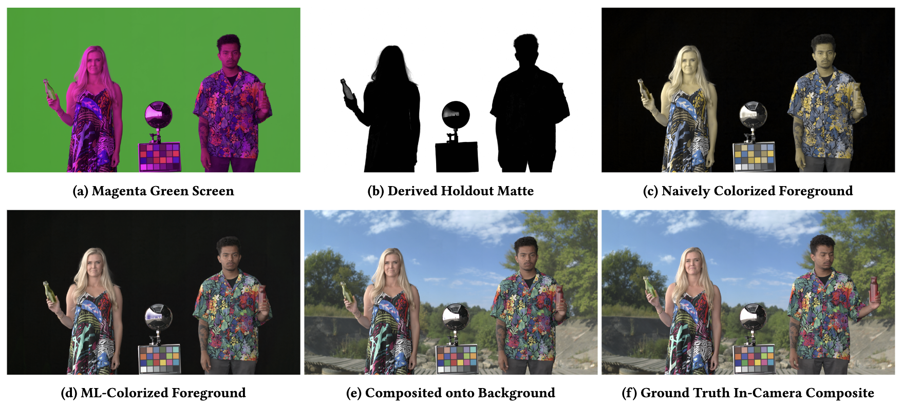
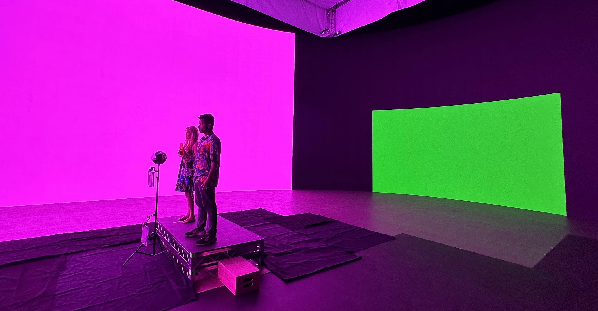
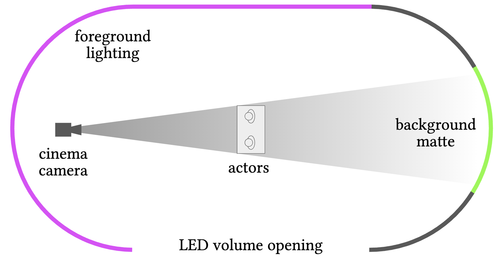
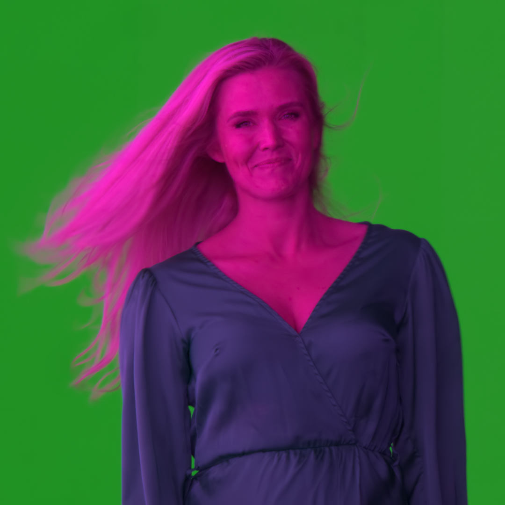

Magenta Green Screen: Spectrally Multiplexed Alpha Matting with Deep Colorization

Abstract
We introduce Magenta Green Screen, a novel machine-learning-enabled matting technique for recording the color image of a foreground actor with a simultaneous high-quality alpha channel without requiring a special camera or manual keying techniques. We record the actor on a green background, but light them with only red and blue foreground lighting. In this configuration, the green channel shows the actor silhouetted against a bright, even background, which can be used directly as a holdout matte, the inverse of the actor's alpha channel. We then restore the green channel of the foreground using a machine learning colorization technique. We train the colorization model with an example sequence of the actors lit by white lighting, yielding convincing and temporally stable colorization results. We further show that time-multiplexing the lighting between magenta green screen and green magenta screen allows the technique to be practiced under what appears to be mostly normal lighting. We demonstrate that our technique yields high-quality compositing results when implemented on a modern LED virtual production stage. The high-quality alpha channel data obtainable with our technique can provide significantly higher quality training data for natural image matting algorithms to support future ML matting research.
Method
Our method honors Alvy Ray Smith's assertion that the "transparency of an image is as fundamental as its color" and uses one of the camera's three color channels (usually green) to measure the alpha channel. We then use example-based image colorization to restore the green channel of the foreground element.


We filmed our actors inside an LED volume. The actors stood on a platform in the middle of the stage facing toward one curved side wall, with the other curved side wall behind them. We used the walls in front and to the side of the actor for lighting and an area of the wall just behind the actors for the background, cropped tightly around the camera frustum to minimize spill light. In the canonical configuration, we drove the lighting with a magenta color consisting of only the red and blue LEDs and the background with a green color consisting of only green LEDs.
Results
We apply the magenta green screen approach to a close-up shot featuring wispy blonde hair and a green outfit, a difficult setup for conventional automatic keying techniques. Our method is able to reliably recover a high-quality alpha channel. Use the button below to toggle between the recovered alpha matte and a resulting composite.

If parts of the scene exhibit colorful transparency, a standard monochrome alpha matte would have the objects transmit incorrectly neutral light. Our method allows us to colorize our alpha mattes, using a reference recording of the actors performing while silhouetted in front of a white background. We demonstrate both monochrome and full-color alpha mattes, obtained using our magenta green screen approach, and corresponding composites.
Supplementary Video
Paper
D. Smirnov, C. LeGendre, X. Yu, P. Debevec
Magenta Green Screen: Spectrally Multiplexed Alpha Matting with Deep Colorization
The Digital Production Symposium (DigiPro), 2023
arXiv |
@inproceedings{smirnov2023magentagreenscreen,
title={Magenta Green Screen: Spectrally Multiplexed Alpha Matting with Deep Colorization},
author={Smirnov, Dmitriy and LeGendre, Chloe and Yu, Xueming and Debevec, Paul},
year={2023},
booktitle={The Digital Production Symposium (DigiPro)}
}